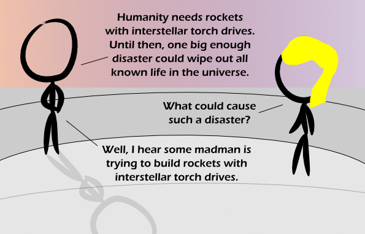

Comic JK 905
When I Feel Like It
⇤
<
?
>
⇥

⇤
<
?
>
⇥
Forum
.
RSS
.
Digg
.
Facebook
.
Reddit
.
Twitter
.
Stumbleupon
Enter your thoughts on number 905 here. Please, no spamming, trolling, phreaking, or citing the Kzinti Lesson. Why is there a yellow blob of ooze eating his head? Hey guys, check out the new forums! >hooray, yet another forum to sign up for... is it only me who preferred the "single-log-in-access-everyting" approach of usenet... ? >>For those like me who refuse to use the evils of Reddit, the REAL forum still exists at comicjk.com/forum >>>right reddit >>>>Just stay in /r/comicjk and screw the rest of reddit! >>>Which is like saying that your REAL home is the house you grew up in for a few years when you were 4, and is now an empty lot due to being positioned in Love Canal, New York.lum >>>>I'd rather set up a tent in an empty lot than book a room in an asylum >>They should make it so that you can log in reddit with your 4chan account. > The comic has forums other than the comment box? >> It does, but they're full of dull and sensitive people who like to believe they're intellectuals. >>It's a wave! >>> >>>> >>>>> >>>>>> >>>>>>> >>>>>>>> >>>>>>>>> >>>>>>>>>> >>>>>>>>>> >>>>>>>>>>>WOOOOOOO! >>>>>>>>>> >>>>>>>>>> >>>>>>>>> >>>>>>>> >>>>>>> >>>>>> >>>>> >>>> >>> >>> >> >> > > > . . . >>>Or is it a particle? >>>>The only thing this is is being ignored. >>>>>So it's both, as you aren't observing it! www.projectrho.com/rocket/prelimnotes.php#johnslaw Also of importance is Burnside's Friends Don't Let Friends Use Reactionless Drives In Their Universes. >I was going to reply to that... but I actually have no reaction... >>You are driving me crazy. Trucks! >Hybrid SUVs! >>Your mom! >>>Your mom's hybrid SUV! Or, you could feed your mother beans and cauliflower. >Pop research shows the keywords 'beans' and 'cauliflower' occur in 67% of conversations about how I met your mother.